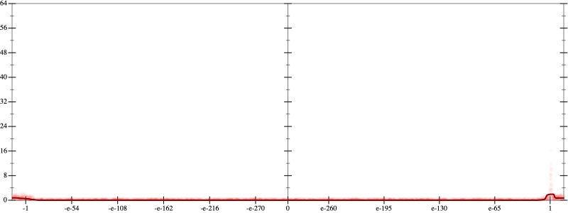
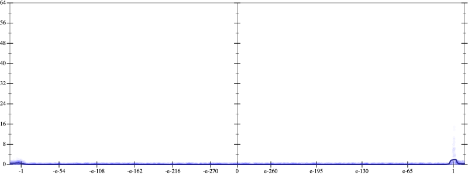
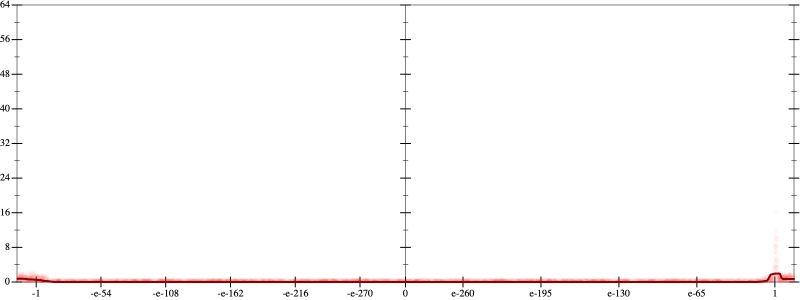
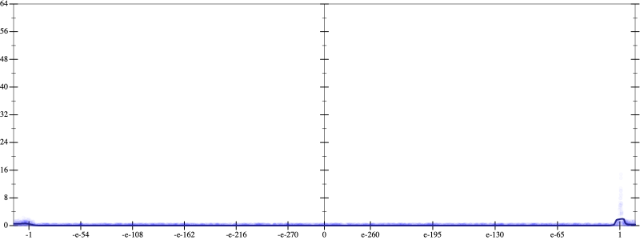

Initial program 0.1
\[\left(\left(\left(\left(\left(\left(\left(\left(\left(1.0 + -11.0 \cdot x\right) + 27.5 \cdot \left(x \cdot x\right)\right) + -27.5 \cdot \left(\left(x \cdot x\right) \cdot x\right)\right) + 13.75 \cdot \left(\left(\left(x \cdot x\right) \cdot x\right) \cdot x\right)\right) + -3.85 \cdot \left(\left(\left(\left(x \cdot x\right) \cdot x\right) \cdot x\right) \cdot x\right)\right) + 0.641667 \cdot \left(\left(\left(\left(\left(x \cdot x\right) \cdot x\right) \cdot x\right) \cdot x\right) \cdot x\right)\right) + -0.065476 \cdot \left(\left(\left(\left(\left(\left(x \cdot x\right) \cdot x\right) \cdot x\right) \cdot x\right) \cdot x\right) \cdot x\right)\right) + 0.004092 \cdot \left(\left(\left(\left(\left(\left(\left(x \cdot x\right) \cdot x\right) \cdot x\right) \cdot x\right) \cdot x\right) \cdot x\right) \cdot x\right)\right) + -0.000152 \cdot \left(\left(\left(\left(\left(\left(\left(\left(x \cdot x\right) \cdot x\right) \cdot x\right) \cdot x\right) \cdot x\right) \cdot x\right) \cdot x\right) \cdot x\right)\right) + 3 \cdot 10^{-06} \cdot \left(\left(\left(\left(\left(\left(\left(\left(\left(x \cdot x\right) \cdot x\right) \cdot x\right) \cdot x\right) \cdot x\right) \cdot x\right) \cdot x\right) \cdot x\right) \cdot x\right)\]
Taylor expanded around 0 0.1
\[\leadsto \left(\left(\left(\left(\left(\left(\left(\left(\left(1.0 + -11.0 \cdot x\right) + 27.5 \cdot \left(x \cdot x\right)\right) + -27.5 \cdot \left(\left(x \cdot x\right) \cdot x\right)\right) + 13.75 \cdot \left(\left(\left(x \cdot x\right) \cdot x\right) \cdot x\right)\right) + -3.85 \cdot \left(\left(\left(\left(x \cdot x\right) \cdot x\right) \cdot x\right) \cdot x\right)\right) + 0.641667 \cdot \left(\left(\left(\left(\left(x \cdot x\right) \cdot x\right) \cdot x\right) \cdot x\right) \cdot x\right)\right) + -0.065476 \cdot \left(\left(\left(\left(\left(\left(x \cdot x\right) \cdot x\right) \cdot x\right) \cdot x\right) \cdot x\right) \cdot x\right)\right) + 0.004092 \cdot \left(\left(\left(\left(\left(\left(\left(x \cdot x\right) \cdot x\right) \cdot x\right) \cdot x\right) \cdot x\right) \cdot x\right) \cdot x\right)\right) + -0.000152 \cdot \left(\left(\left(\left(\left(\left(\left(\left(x \cdot x\right) \cdot x\right) \cdot x\right) \cdot x\right) \cdot x\right) \cdot x\right) \cdot x\right) \cdot x\right)\right) + 3 \cdot 10^{-06} \cdot \left(\left(\left(\left(\left(\left(\left(\color{blue}{{x}^{3}} \cdot x\right) \cdot x\right) \cdot x\right) \cdot x\right) \cdot x\right) \cdot x\right) \cdot x\right)\]
Applied simplify0.1
\[\leadsto \color{blue}{\left(\left(3 \cdot 10^{-06} \cdot \left(x \cdot x\right)\right) \cdot \left(\left(\left(x \cdot x\right) \cdot \left(x \cdot x\right)\right) \cdot \left(\left(x \cdot x\right) \cdot \left(x \cdot x\right)\right)\right) + \left(\left(\left(x \cdot x\right) \cdot \left(x \cdot x\right)\right) \cdot \left(\left(x \cdot x\right) \cdot \left(x \cdot x\right)\right)\right) \cdot \left(-0.000152 \cdot x + 0.004092\right)\right) + \left(\left({\left(x \cdot x\right)}^{3} \cdot \left(-0.065476 \cdot x + 0.641667\right) + \left(\left(x \cdot x\right) \cdot \left(x \cdot x\right)\right) \cdot \left(13.75 + -3.85 \cdot x\right)\right) + \left(\left(x \cdot x\right) \cdot \left(-27.5 \cdot x + 27.5\right) + \left(x \cdot -11.0 + 1.0\right)\right)\right)}\]
Taylor expanded around -inf 0.1
\[\leadsto \left(\left(3 \cdot 10^{-06} \cdot \left(x \cdot x\right)\right) \cdot \left(\left(\left(x \cdot x\right) \cdot \left(x \cdot x\right)\right) \cdot \left(\left(x \cdot x\right) \cdot \left(x \cdot x\right)\right)\right) + \left(\left(\left(x \cdot x\right) \cdot \left(x \cdot x\right)\right) \cdot \left(\left(x \cdot x\right) \cdot \left(x \cdot x\right)\right)\right) \cdot \left(-0.000152 \cdot x + 0.004092\right)\right) + \left(\left(\color{blue}{{\left(\frac{-1}{x}\right)}^{-6}} \cdot \left(-0.065476 \cdot x + 0.641667\right) + \left(\left(x \cdot x\right) \cdot \left(x \cdot x\right)\right) \cdot \left(13.75 + -3.85 \cdot x\right)\right) + \left(\left(x \cdot x\right) \cdot \left(-27.5 \cdot x + 27.5\right) + \left(x \cdot -11.0 + 1.0\right)\right)\right)\]
Applied simplify0.1
\[\leadsto \color{blue}{\left({\left(x \cdot x\right)}^{\left(3 + 1\right)} \cdot \left(\left(-0.000152 \cdot x + 0.004092\right) + 3 \cdot 10^{-06} \cdot \left(x \cdot x\right)\right) + \left(-11.0 \cdot x + \left(x \cdot x\right) \cdot \left(27.5 + x \cdot -27.5\right)\right)\right) + \left(1.0 + \left(\left(13.75 + x \cdot -3.85\right) \cdot \left(\left(x \cdot x\right) \cdot \left(x \cdot x\right)\right) + \left(-0.065476 \cdot x + 0.641667\right) \cdot {\left(\frac{-1}{x}\right)}^{-6}\right)\right)}\]
- Using strategy
rm Applied pow20.1
\[\leadsto \left({\color{blue}{\left({x}^{2}\right)}}^{\left(3 + 1\right)} \cdot \left(\left(-0.000152 \cdot x + 0.004092\right) + 3 \cdot 10^{-06} \cdot \left(x \cdot x\right)\right) + \left(-11.0 \cdot x + \left(x \cdot x\right) \cdot \left(27.5 + x \cdot -27.5\right)\right)\right) + \left(1.0 + \left(\left(13.75 + x \cdot -3.85\right) \cdot \left(\left(x \cdot x\right) \cdot \left(x \cdot x\right)\right) + \left(-0.065476 \cdot x + 0.641667\right) \cdot {\left(\frac{-1}{x}\right)}^{-6}\right)\right)\]
Applied pow-pow0.1
\[\leadsto \left(\color{blue}{{x}^{\left(2 \cdot \left(3 + 1\right)\right)}} \cdot \left(\left(-0.000152 \cdot x + 0.004092\right) + 3 \cdot 10^{-06} \cdot \left(x \cdot x\right)\right) + \left(-11.0 \cdot x + \left(x \cdot x\right) \cdot \left(27.5 + x \cdot -27.5\right)\right)\right) + \left(1.0 + \left(\left(13.75 + x \cdot -3.85\right) \cdot \left(\left(x \cdot x\right) \cdot \left(x \cdot x\right)\right) + \left(-0.065476 \cdot x + 0.641667\right) \cdot {\left(\frac{-1}{x}\right)}^{-6}\right)\right)\]
 
